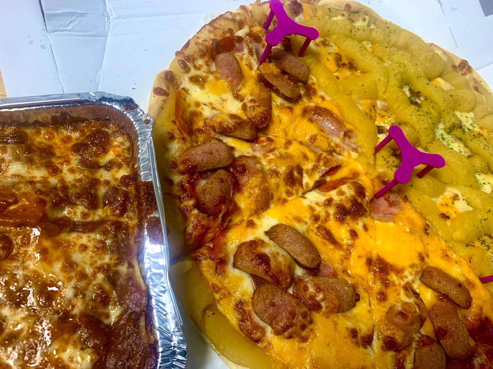

오늘의 배달일기
2023년 12월 15일 금요일
오늘의 Menu는~~~~!
토핑이 무지막지하게 들어간 '미친피자' !!!

강의를 듣던 중에 저녁뭐먹지 고민하며 배민 뒤적거리다가 찾은 맛집!
평소에 배달시킬 때 주문 많은 순이나 찜 많은 순으로 정렬하고 찾는디
왐마 둘다 상위권인겨!
그래서 리뷰이벤트 확인하고 바로 주문해부렀제
내가 시킨 메뉴는 반반피자에
소.베.페(소시지+베이컨+페퍼로니)+화이트고구마베이컨!!!
리뷰이벤트로는 고구마 환장남이라 고구마크러스트 추가하고
피자옆에 있는 치즈 오븐파스타로 받아버렸삼
기다리는 동안 담배한대 슥 빨고 과제하고 있응게 금방오더라
기대에 가득찬 손짓으로 포장을 풀어 헤치니께
사장님 남는거 있을랑가 싶을정도로 토핑 미쳐버린 것이 두께도 뒤지게 두꺼웠음!!
파스타는 뭐 서비스니께 기대안했는데 치즈가 또 야무진게 야물치였음 ㄹㅇ ㅋㅋ
여튼 줜나맛있게 후루룹하는디 파스타다먹고 피자 3조각먹었는디 배불띠 되어버림;;
남는건 내일아침으로 먹어야지 하고 냉장고에 쟁여두고 배달일기 쓰는중 ㅋㅋㅋ
* 총 평 *
토핑이 엄청나기 때문에 시각적으로는 줜나 맛있다!
단짠을 원해서 쏘베페랑 화이트고구마베이컨을 시킨건데
둘다 각자 개성이 너무강해서 조합이 안맞았다 ㅠㅠ
고구마 개좋아하는데 고구마무스를 개많이 쳐묵하니까 오히려 알수없는 거부감이 생기더라
그래도 개맛있었음!!
배달도 빨리왔고 서비스도 우르르 왕창주셨기 때문에 당연히 만점박아드렸다
담에칭구덜 놀러오면 시켜줄듯?!
© 2023 Meoyong. All Rights Reserved.